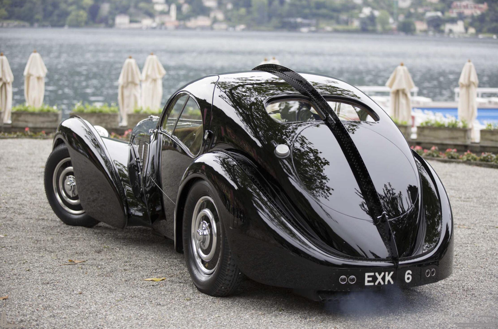

About the Bugatti Type 57SC Atlantic
The **Bugatti Type 57SC Atlantic**, introduced in **1936**, is one of the rarest and most sought-after classic cars. With its **aerodynamic design**, **riveted aluminum body**, and **powerful supercharged engine**, it represents the pinnacle of pre-war automotive craftsmanship. Only **four** were ever built, making it one of the most valuable collector cars in history.
Specifications
- 📅 Year of Production: 1936 - 1938
- 🚗 Engine: 3.3L Supercharged Inline-8
- ⚡ Horsepower: 200 HP
- 🏎️ Top Speed: 124 mph (200 km/h)
- ⚙️ Transmission: 4-Speed Manual
- 🛠️ Body: Aluminum Alloy with Riveted Dorsal Seam
Interested in Buying?
Click the button below to visit the official seller's page and inquire about this rare classic.
Buy Now*not available